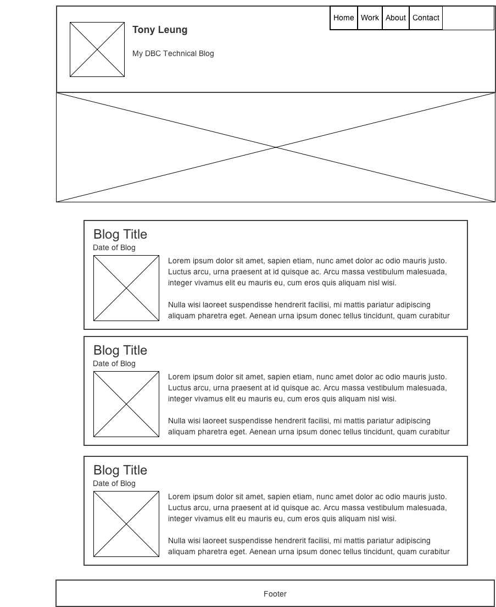

So after reading up about responsive design, proper web design, and user experience. I plan to implement these techniques into my new page. Also working with HTML5, I plan on limiting my usage of divs and building my site semantically better. Playing around with fonts types and icon fonts, I plan to use more of these to improve my performance and allow faster load times of my pages. Lastly I will use tools such as Color Scheme Designer 3 to start my site off with a good color palette.
The site again will be a blog site that will incorporate all the dbc blogs I write. But I hope this time it will work for a variety of screens/devices. Listed below is the old wireframe of my site and also what my new wireframe will look like now.
